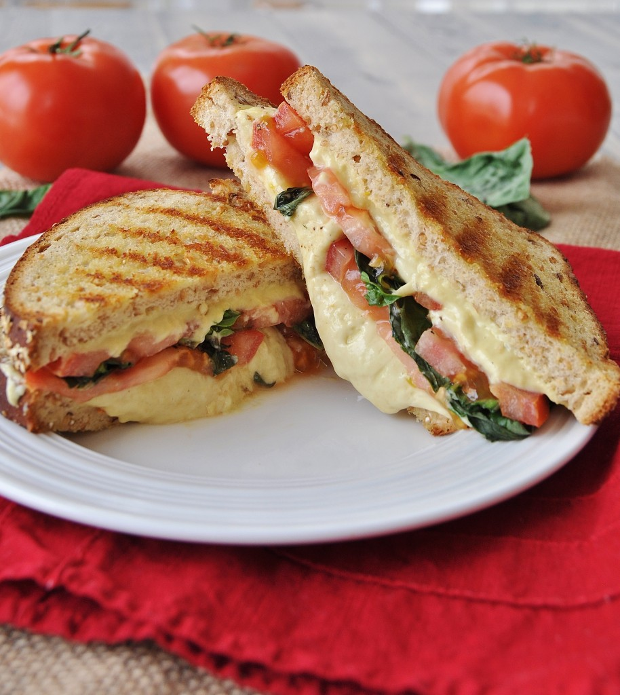

Home
Grilled Cheese Sandwich

Description
A quick and comforting classic. Perfect for breakfast, lunch, or a midnight snack. Crispy bread on the outside, gooey melted cheese inside.
Ingredients
- 2 slices of bread
- 2 slices of cheese (cheddar, mozzarella, or your choice)
- 1-2 tablespoons of butter
Steps
- Butter the bread: Spread butter evenly on one side of each slice of bread.
- Assemble: Place one slice, butter side down, on a pan. Add cheese slices on top, then cover with the second slice of bread (butter side up).
- Cook: Heat on medium until the bottom is golden brown, then flip and cook until the other side is golden and the cheese has melted.
- Serve: Slice diagonally and enjoy hot.